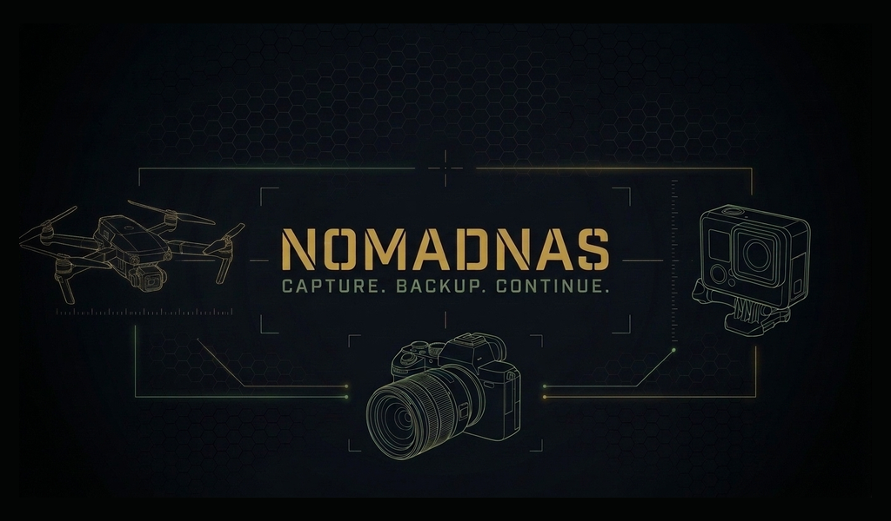
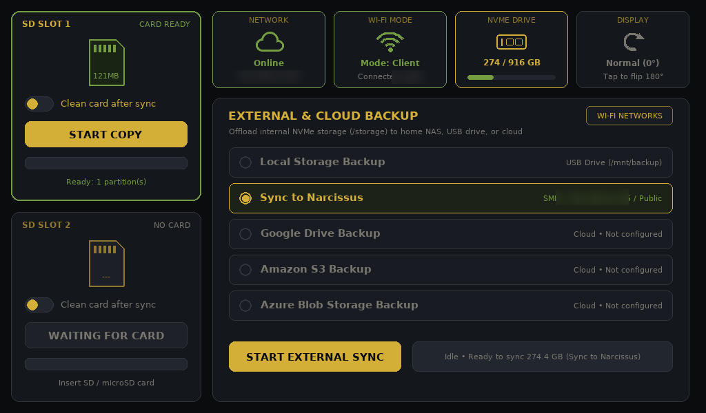
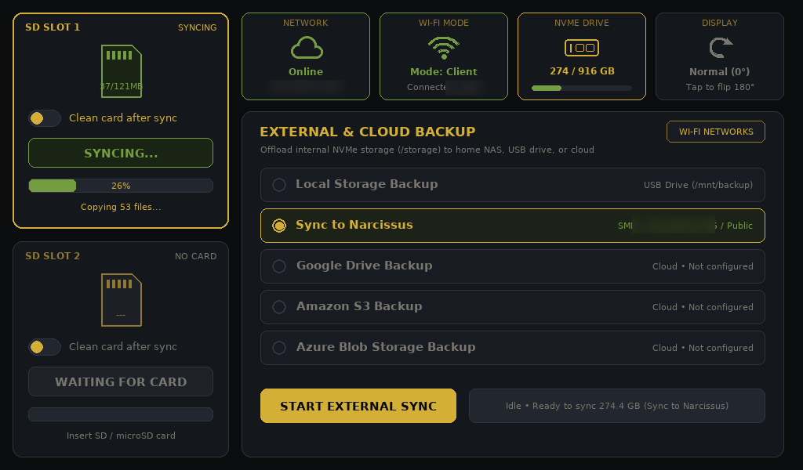
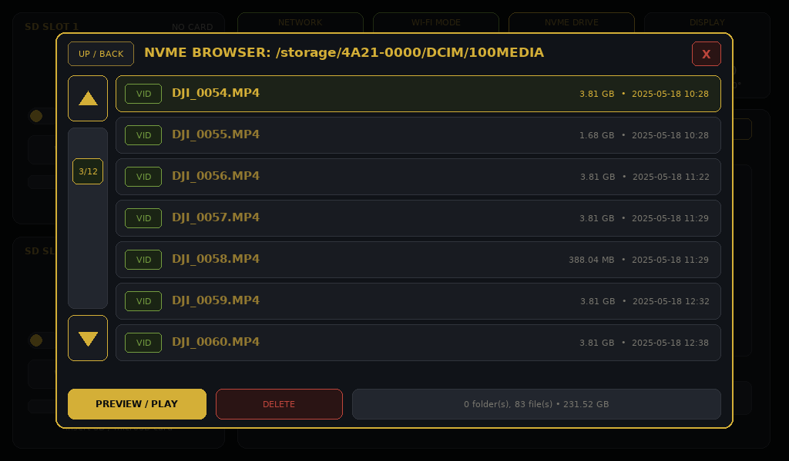
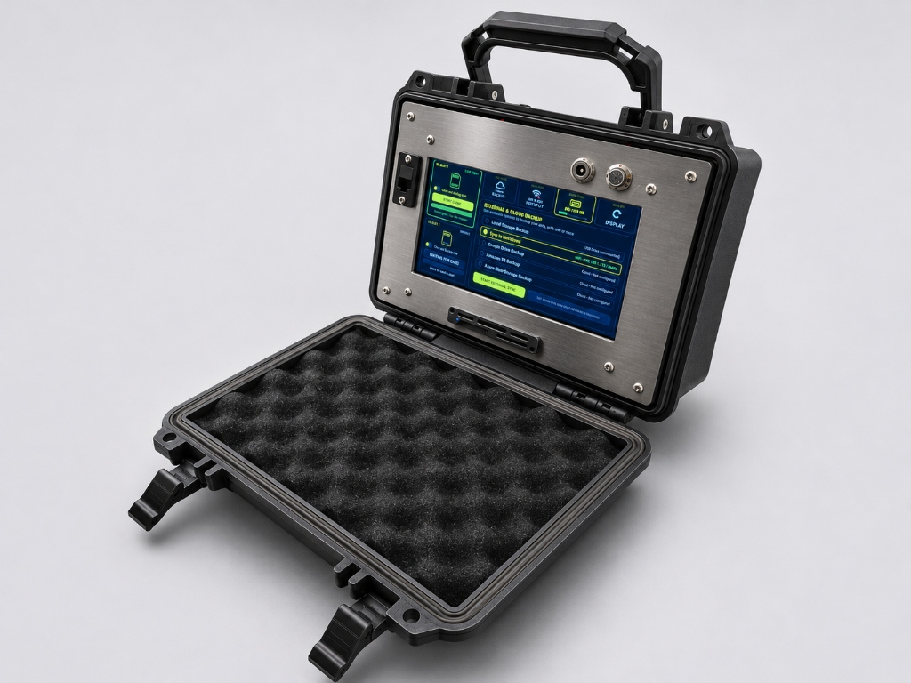
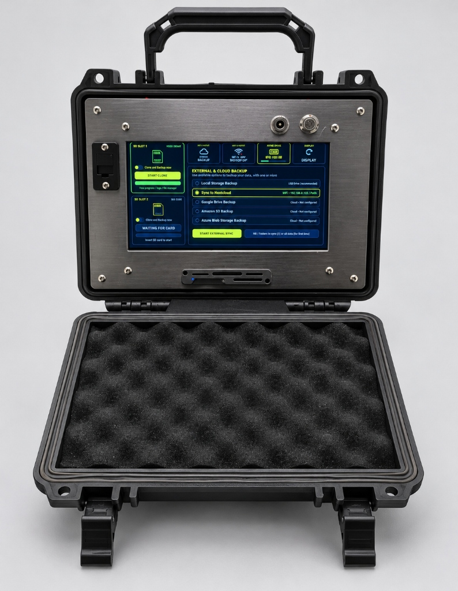

Insert your SD or microSD card, tap Start Copy, verify your footage right on the night-friendly touchscreen, and offload later to your home NAS or cloud — anywhere in the field.

NomadNAS turns a rugged Raspberry Pi 4 cyberdeck or an old Debian touchscreen laptop into a dedicated field backup appliance with zero harsh glare and one-tap operation.
Auto-detects cards and syncs both slots in parallel with live rsync progress. Supports SD, microSD, CF, MS, XD, SDHC, and SDXC cards, with an optional Clean card after sync switch.
Browse NVMe storage directly on the device: scrub MP4/MOV clips, preview DNG/RAW/JPEG photos, and view drone SRT telemetry.
Sync or Move footage to SMB/Samba NAS, Amazon S3, Google Drive, Azure Blob, or local USB drives — with optional automatic local cleanup after verified transfer.
Switch cleanly between OFF, AP Mode (creates its own NomadNAS hotspot), and Client Mode with an on-screen touch keyboard.
Tap the gear icon to launch a password-protected mobile Web UI. Scan the QR code with your phone to paste cloud keys and test bucket/share access live.
Checks GitHub automatically when online and updates cleanly in-place via ansible-pull with one tap.



Prefer a turnkey, weather-sealed Pelican-style appliance tested and ready out of the box?


Custom CNC-cut brushed aluminum faceplate (acting as a passive heatsink) inside an IP65 weatherproof case, built around a Raspberry Pi 4 and high-speed NVMe storage.
NomadNAS is open-source software. Choose between repurposing a rugged/touchscreen Debian laptop or fabricating the custom SBC cyberdeck.
Turn an existing touchscreen laptop with a built-in SD slot and battery into a zero-fabrication field NAS.
Build the exact Apache 1800 cyberdeck using our open-source Bill of Materials, CAD, and 3D-print files.
.dxf, .stl, .scad) TBD/storage TBD